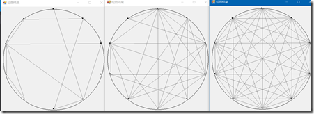

© 2019 《算法（第四版）》C# 题解 | Provided By 沈星繁
搜索解答
目前已完成到 2.5
1.1.31
上次更新：2019-02-11
发现了题解错误/代码缺陷/排版问题？请点这里：如何：提交反馈 。
题目
1.1.31
随机连接。
编写一段程序，从命令行接受一个整数 N 和 double 值 p （0 到 1 之间）作为参数，
在一个圆上画出大小为 0.05 且间距相等的 N 个点，
然后将每对点按照概率 p 用灰线连接。
解答
概率的实现方法：
例如概率是 60 %，就在 [0, 100) 之间随机一个值，小于等于 60 则执行操作，反之不执行。
需要更精确的情况可以增大随机的范围，例如 [0, 1000)。
绘图结果

N = 10,p = 0.2, 0.5, 1
完整项目可以到 Github 上下载。
代码
/// <summary>
/// 主绘图函数
/// </summary>
/// <param name="N">点的总数目</param>
/// <param name="p">每对点之间连接的概率</param>
public static void StartDrawing(int N, double p)
{
int pointSize = 5;//每个点绘制的大小
int precious = 1000;//概率判断的精度
//新建一个绘图窗口
Form2 DrawPad = new Form2();
//显示绘图窗口
DrawPad.Show();
//新建画布
Graphics graphics = DrawPad.CreateGraphics();
//建立绘图区域（矩形）
Rectangle rect = new Rectangle(10, 10, 400, 400);
//画圆
graphics.DrawEllipse(Pens.Black, rect);
//计算旋转角度
double rotateDgree = 360.0 / N;
//计算点的坐标
Point Center = new Point(rect.Top + rect.Height / 2, rect.Top + rect.Height / 2);
Point[] points = new Point[N];
points[0].X = rect.Left + rect.Width / 2;
points[0].Y = rect.Top;
for (int i = 1; i < N; ++i)
{
points[i] = Rotate(Center, points[i - 1], rotateDgree);
}
//绘制点
foreach (Point point in points)
{
graphics.FillEllipse(Brushes.Black, point.X - pointSize, point.Y - pointSize, pointSize, pointSize);
}
//按照概率绘制直线
Random random = new Random();
for (int i = 0; i < N; ++i)
{
for (int j = i + 1; j < N; ++j)
{
//举例：输入概率为 0.6，精度为 1000
//在 0~1000 范围内等概率取值，如果小于等于 600 则视为事件发生
if (random.Next(0, precious) <= p * precious)
{
graphics.DrawLine(Pens.Gray, points[i], points[j]);
}
}
}
//释放资源
graphics.Dispose();
}
/// <summary>
/// 计算一个点绕某点旋转之后的坐标值
/// </summary>
/// <param name="origin">旋转的圆心</param>
/// <param name="point">需要旋转的点</param>
/// <param name="dgree">旋转的角度（逆时针）</param>
/// <returns>返回旋转后的坐标</returns>
public static Point Rotate(Point origin, Point point, double dgree)
{
Point rotated = new Point();
double dgreePi = dgree / 180 * Math.PI;
rotated.X = (int)((point.X - origin.X) * Math.Cos(dgreePi) -
(point.Y - origin.Y) * Math.Sin(dgreePi) + origin.X);
rotated.Y = (int)((point.X - origin.X) * Math.Sin(dgreePi) +
(point.Y - origin.Y) * Math.Cos(dgreePi) + origin.Y);
return rotated;
}